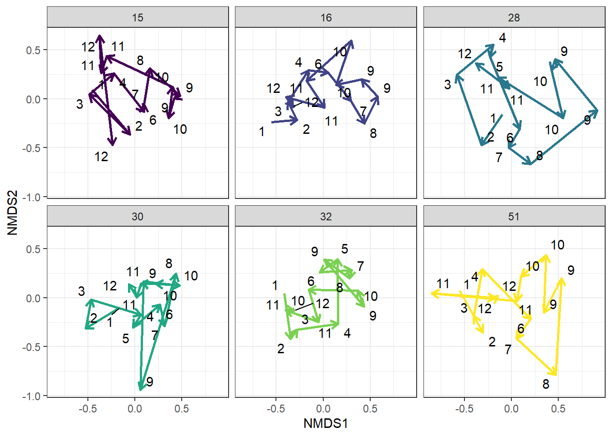

library(tidyverse)
## ── Attaching core tidyverse packages ──────────────────────── tidyverse 2.0.0 ──
## ✔ dplyr 1.1.4 ✔ readr 2.1.5
## ✔ forcats 1.0.0 ✔ stringr 1.5.1
## ✔ ggplot2 3.5.2 ✔ tibble 3.3.0
## ✔ lubridate 1.9.4 ✔ tidyr 1.3.1
## ✔ purrr 1.1.0
## ── Conflicts ────────────────────────────────────────── tidyverse_conflicts() ──
## ✖ dplyr::filter() masks stats::filter()
## ✖ dplyr::lag() masks stats::lag()
## ℹ Use the conflicted package (<http://conflicted.r-lib.org/>) to force all conflicts to become errors
library(ecotraj)
## Loading required package: Rcpp
library(vegan)
## Loading required package: permute
df = read_csv('data/Calcasieu.csv') |>
mutate(month = month(date))
## Rows: 90 Columns: 62
## ── Column specification ────────────────────────────────────────────────────────
## Delimiter: ","
## chr (1): basin
## dbl (60): site, Speckled Madtom, Sailfin Molly, Blue Crab, Atlantic Croaker...
## date (1): date
##
## ℹ Use `spec()` to retrieve the full column specification for this data.
## ℹ Specify the column types or set `show_col_types = FALSE` to quiet this message.
#community matrix
comm_matrix = df |> select(-basin, -site, -date, -month)
# site data
site = df$site
# survey
survey = df$month
# create bray curtis dissimilarity matrix
b_dist = vegdist(comm_matrix, method = "bray")
# define trajectory
d = defineTrajectories(b_dist, sites = site, surveys =survey)
# can be done with other ways
nmds = metaMDS(comm_matrix, distance = "bray", k = 2, try = 100)
## Square root transformation
## Wisconsin double standardization
## Run 0 stress 0.2587436
## Run 1 stress 0.2676933
## Run 2 stress 0.2597635
## Run 3 stress 0.261218
## Run 4 stress 0.2702494
## Run 5 stress 0.2707404
## Run 6 stress 0.271461
## Run 7 stress 0.2887418
## Run 8 stress 0.2757583
## Run 9 stress 0.2689222
## Run 10 stress 0.272917
## Run 11 stress 0.2827534
## Run 12 stress 0.2789233
## Run 13 stress 0.2831206
## Run 14 stress 0.2604148
## Run 15 stress 0.2638066
## Run 16 stress 0.2720802
## Run 17 stress 0.2661952
## Run 18 stress 0.2631864
## Run 19 stress 0.262265
## Run 20 stress 0.2790603
## *** Best solution was not repeated -- monoMDS stopping criteria:
## 1: no. of iterations >= maxit
## 19: stress ratio > sratmax
# convert nMDS to tibble
df_nmds = tibble(site = as.factor(site),
month = survey,
data.frame(nmds[["points"]])) |>
# add end points of each segment for arrow
group_by(site) |>
mutate(xend = lead(MDS1), yend = lead(MDS2))
library(viridis)
## Loading required package: viridisLite
library(ggrepel)
# plot
ggplot(df_nmds, aes(MDS1, MDS2))+
geom_segment(aes(xend = xend, yend = yend, color = site),
linewidth = 1,
arrow = arrow(length = unit(0.25, "cm")))+
ggrepel::geom_text_repel(aes(label=month))+
facet_wrap(~site)+
labs(x = 'NMDS1', y = 'NMDS2',
color = 'Site')+
scale_color_viridis_d()+
theme_bw()+
theme(legend.position = 'none')
## Warning: Removed 1 row containing missing values or values outside the scale range
## (`geom_segment()`).
## Removed 1 row containing missing values or values outside the scale range
## (`geom_segment()`).
## Removed 1 row containing missing values or values outside the scale range
## (`geom_segment()`).
## Removed 1 row containing missing values or values outside the scale range
## (`geom_segment()`).
## Removed 1 row containing missing values or values outside the scale range
## (`geom_segment()`).
## Removed 1 row containing missing values or values outside the scale range
## (`geom_segment()`).